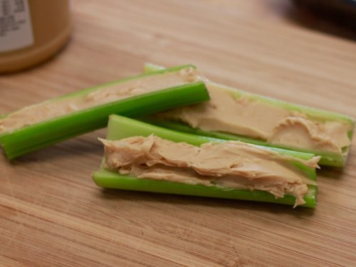

Peanutbutter Celery
Back Home

Description
Healthy mid-day snack that can be made in a matter of seconds!
Ingredients
- Celery
- Peanutbutter
- raisins or other toppers
Steps
- Take your celery and wash under cold water.
- Cut the stem and butt end off of each piece of celery where the white starts.
- Using a knife, slather desired amount of peanutbutter onto the celery's length.
- If you want, you can add raisins or any other toppers